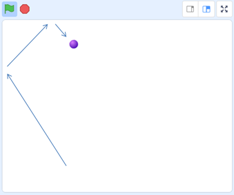

第5回オンライン開催報告
本日のScratchテーマは「ブロック崩し」を作ってみるよ
2021-05-02
ゴールデンウィーク臨時会を開催。募集期間が短かったけれど、ニンジャ２名が参加してくれました。スクラッチのプログラミングで知っていると便利な機能に空間座標があります。マイナスの座標は中学校で学ぶのですが、今日は思い切ってX座標、Y座標を使ってみる事にしました。「ところで座標って知ってたりしますか」という質問してみたところ、スクラッチの本を読んで少しやったことあるとの事なので、学校で教わる前に体験として知っておくのもアリなのかなと思いました。
スクラッチ完成品はこちら
「ブロック」を並べます
X座標はヨコの位置だよ。真ん中がゼロ”０”、右側に進むと１，２，３，４と増えていきます。真ん中から左側に進むとマイナス１、マイナス２、マイナス３と変わっていきます。
Y座標はタテの位置だよ。真ん中がゼロ”０”、上に進むと１，２，３。真ん中から下に進むとマイナス１、マイナス２、マイナス３。
「スタートの旗」を押して最初にやることは、ステージ画面の左上に１つめのブロックを置くコトです。
X座標は[-200]、Y座標は[120]にしてみます。
「クローン」って知っているかな、スプライトをコピーする機能です。「クローンを作る」「クローンされたとき」「クローンを削除する」の３つを使います。
１つめのブロックのクローンを作ります。次にX座標を右側に変えます。これを７回繰り返してみましょう。ブロックが重なったりする場合は、移動する数字を大きくしたり小さくしてみましょう。
「ボール」を作ります
スプライトの名前は「ボール」に変えると後で便利。ステージ画面の真ん中（X座標＝0, Y座標=0）が最初の位置。そしてボールの向きを下、少し斜めに向けて、ずーっと10歩動かします。画面端に着いたら跳ね返るようにします。
動作を試そう。旗を押してスタート。

「ラケット」を作ります
スプライトの名前を「ラケット」に変えます。キーボードの矢印「みぎ」が押されたら、90度（右）に動かします。左はその反対ね。

動作を試そう。旗を押してスタート。
「ボール」を打ち返そう
「ボール」が「ラケット」に当たったら跳ね返るので、「ボール」のプログラムを改造します。ボールが、もしラケットに触れたら向きを反対にします。ここは下図のままコードを組み立ててください。
動作を試そう。旗を押してスタート。
ここまでの完成形
次は何をしたらいいかな？
「ブロック」が「ボール」に当たったら「ブロック」を消すように改造してみよう。「ブロック」が消えるので「ブロック」のプログラムを改造します。

動作を試そう。旗を押してスタート。
「ブロック」をタテにも並べてみよう。これで「ブロック崩し」ゲームは完成。もっと改造するアイディアがひらめくまで少し遊んでみよう。何が足りないかな？
改造のアイディア
「得点」を追加する
「ブロック」のプログラムを改造するね。旗が押されたときの初期設定。
「ブロック」を並べるイベントの開始は、旗じゃなくて「ステージクリア」のメッセージを受け取った時にしよう
「得点」変数と「残りブロック」変数を追加してみた。
続けて「ラケット」のプログラムを改造するよ。
旗が押されたときの初期設定だ。得点をゼロにして、残りブロックをブロックの数に合わせる。
もし「残りブロック」変数がゼロ(0)になったらステージクリアだよ。
「ゲームオーバー」を追加する
「地面」と「ゲームオーバー」のスプライトを追加したよ。
「ボール」のプログラムに、「ボール」がもし「地面」に触れたら「ゲームオーバー」メッセージを送る。
「ゲームオーバー」のプログラムには、「ゲームオーバー」メッセージを受け取ったら表示する。
「ブロック崩し」ゲームでした
あとは自分でいろいろと改造してみてねー。
ばいばーい